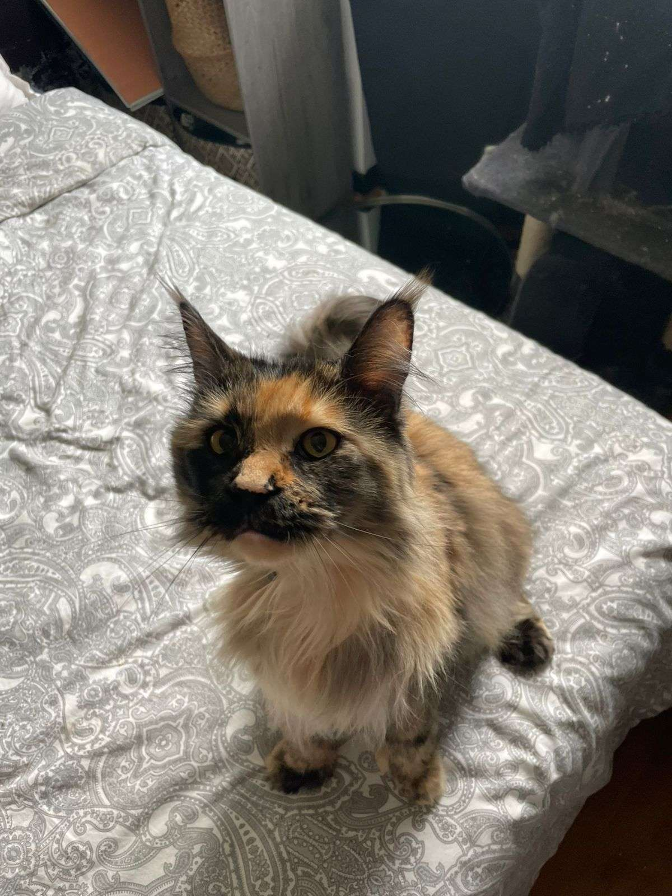

Bienvenue à la Clinique Vétérinaire de Molsheim
Nous accueillons tous vos animaux de compagnie avec le sérieux et l'attention qu'ils méritent. Que vous soyez accompagné d'un chien, d'un chat, d'un lapin ou de tout autre compagnon du quotidien, notre équipe met son expertise au service de leur santé, avec le souci constant de vous offrir un suivi clair et rassurant à chaque étape.
Ce qui nous anime avant tout, c'est un amour sincère des animaux. Chaque patient qui franchit notre porte est traité avec douceur et respect, comme s'il était des nôtres. Parce que nous savons à quel point votre compagnon compte pour vous, nous nous engageons à vous offrir des soins à la hauteur de ce lien si particulier.
